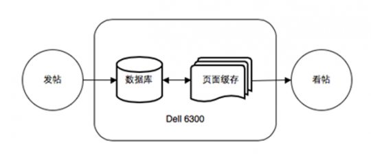
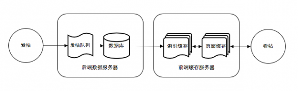
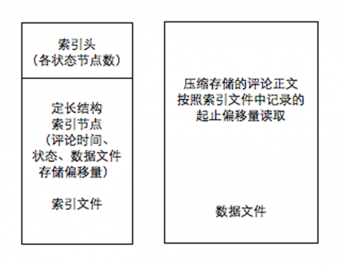
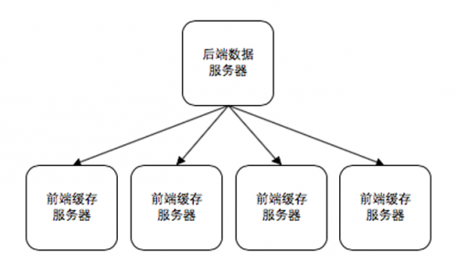
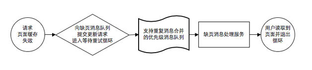
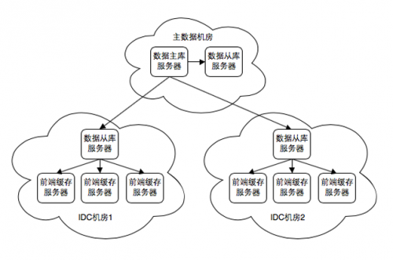
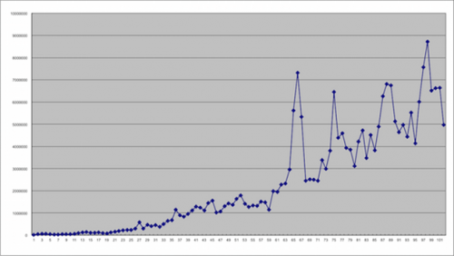
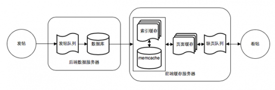
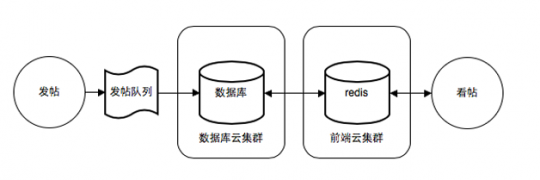

门户级UGC系统的技术进化路线——新浪新闻评论系统的架构演进和经验总结
评论系统，或者称为跟帖、留言板，是所有门户网站的核心标准服务组件之一。与论坛、博客等其他互联网UGC系统相比，评论系统虽然从产品功能角度衡量相对简单，但因为需要能够在突发热点新闻事件时，在没有任何预警和准备的前提下支撑住短短几分钟内上百倍甚至更高的访问量暴涨，而评论系统既无法像静态新闻内容业务那样通过CDN和反向代理等中间缓存手段化解冲击，也不可能在平时储备大量冗余设备应对突发新闻，所以如何在有限的设备资源条件下提升系统的抗压性和伸缩性，也是对一个貌似简单的UGC系统的不小考验。
新闻评论系统的起源
新浪网很早就在新闻中提供了评论功能，最开始是使用Perl语言开发的简单脚本，目前能找到的最早具备评论功能的新闻是2000年4月7日的，经过多次系统升级，2014年前的评论地址已经失效了，但数据仍保存在数据库中。直到今天，评论仍是国内所有新闻网站的标配功能。
评论系统3.0
2003年左右，我接手负责评论系统，系统版本为3.0。当时的评论系统运行在单机环境，一台x86版本Solaris系统的Dell 6300服务器提供了全部服务，包括MySQL和Apache，以及所有前后台CGI程序，使用C++开发。

图1 3.0系统流程和架构
3.0系统的缓存模块设计得比较巧妙，以显示页面为单位缓存数据，因为评论页面依照提交时间降序排列，每新增一条评论，所有帖子都需要向下移动一位，所以缓存格式设计为每两页数据一个文件，前后相邻的两个文件有一页数据重复，最新的缓存文件通常情况下不满两页数据。

图2 页面缓存算法示意图
图2是假设评论总数95条，每页显示20条时的页面缓存结构，此时用户看到的第一页数据读取自“缓存页4”的95~76，第二页数据读取自“缓存页3”的75~56，以此类推。
这样发帖动作对应的缓存更新可简化为一次文件追加写操作，效率最高。而且可保证任意评论总量和显示顺序下的翻页动作，都可在一个缓存文件中读到所需的全部数据，而不需要跨页读取再合并。缺点是更新评论状态时（如删除），需要清空自被删除帖子开始的所有后续缓存文件。缓存模块采取主动+被动更新模式，发帖为主动，每次发帖后触发一次页面缓存追加写操作。更新评论状态为被动，所涉及缓存页面文件会被清空，直到下一次用户读取页面缓存时再连接数据库完成查询，然后更新页面缓存，以备下次读取。这个针对发帖优化的页面缓存算法继续沿用到了后续版本的评论系统中。
此时的评论系统就已具备了将同一专题事件下所有新闻评论汇总显示的能力，在很长一段时间内这都是新浪评论系统的独有功能。
虽然3.0系统基本满足了当时的产品需求，但毕竟是单机系统，热点新闻时瞬间涌来的大量发帖和读取操作，经常会压垮这台当时已属高配的4U服务器，频繁显示资源耗尽的错误页面。我接手后的首要任务就是尽量在最短时间内最大限度降低系统的宕机频率，通过观察分析确定主要性能瓶颈在数据库层面。
3.0系统中，每个新闻频道的全部评论数据都保存在一张MyISAM表中，部分频道的数据量已经超过百万，在当时已属海量规模，而且只有一个数据库实例，读写竞争非常严重。一旦有评论状态更新，就会导致很多缓存页面失效，瞬间引发大量数据库查询，进一步加剧了读写竞争。当所有CGI进程都阻塞在数据库环节无法退出时，殃及Apache，进而导致系统Load值急剧上升无法响应任何操作，只有重启才能恢复。
解决方案是增加了一台FreeBSD系统的低配服务器用于数据库分流，当时MySQL的版本是3.23，Replication主从同步还未发布，采取的办法是每天给数据表减肥，把超过一周的评论数据搬到2号服务器上，保证主服务器的评论表数据量维持在合理范围，在这样的临时方案下，3.0系统又撑了几个月。
现在看来，在相当简陋的系统架构下，新浪评论系统3.0与中国互联网产业的门户时代一起经历了南海撞机、911劫机、非典、孙志刚等新闻事件。
评论系统4.0启动
2004年左右，运行了近三年的3.0系统已无法支撑新浪新闻流量的持续上涨，技术部门启动了4.0计划，核心需求就是三个字：不宕机。
因为当时我还负责了新浪聊天系统的工作，不得不分身应对新旧系统的开发维护和其他项目任务，所以在现有评论系统线上服务不能中断的前提下，制定了数据库结构不变，历史数据全部保留，双系统逐步无缝切换，升级期间新旧系统并存的大方针。
第一阶段：文件系统代替数据库，基于ICE的分布式系统
既然3.0系统数据库结构不可变，除了把数据库升级到MySQL 4.0启用Repliaction分解读写压力以外，最开始的设计重点是如何把数据库与用户行为隔离开。
解决方案是在MySQL数据库和页面缓存模块之间，新建一个带索引的数据文件层，每条新闻的所有评论都单独保存在一个索引文件和一个数据文件中，期望通过把对数据库单一表文件的读写操作，分解为文件系统上互不干涉可并发执行的读写操作，来提高系统并发处理能力。在新的索引数据模块中，查询评论总数、追加评论、更新评论状态都是针对性优化过的高效率操作。从这时起，MySQL数据库就降到了只提供归档备份和内部管理查询的角色，不再直接承载任何用户更新和查询请求了。
同时引入了数据库更新队列来缓解数据库并发写操作的压力，因为当时消息队列中间件远不如现在百花齐放，自行实现了一个简单的文件方式消息队列模块，逐步应用到4.0系统各个模块间异步通信场合中。

图3 4.0系统流程
选用了ICE作为RPC组件，用于所有的模块间调用和网络通信，这大概是刚设计4.0系统时唯一没做错的选择，在整个4.0系统项目生命周期，ICE的稳定性和性能表现从未成为过问题。

图4 4.0索引缓存结构
4.0系统开发语言仍为C++，因为同时选用了MySQL 4.0、ICE、Linux系统和新文件系统等多项应用经验不足的新技术，也为后来的系统表现动荡埋下了伏笔（新浪到2005年左右才逐步从FreeBSD和Solaris迁移到了CentOS系统）。

图5 4.0系统架构
此时的4.0评论系统已从双机互备扩容到五机集群，进入小范围试用阶段，虽然扛过了刘翔第一次夺金时创纪录的发帖高峰，但倒在了2004年亚洲杯中国队1 : 3败于日本队的那个夜晚。
当时系统在进入宕机之前的最高发帖速度大约是每分钟千帖量级，在十年前还算得上是业界同类系统的峰值，最终确认问题出在文件系统的I/O负载上。
设计索引缓存模块时的设想过于理想化，虽然把单一数据表的读写操作分解到了文件系统的多个文件上，但不可避免地带来了对机械磁盘的大量随机读写操作，在CentOS默认的Ext3文件系统上，每条新闻对应两个文件的设计（2004年新浪新闻总量为千万左右），虽然已采取了128×256的两层目录HASH来预防单目录下文件过多隐患，但刚上线时还表现良好的系统，稍过几个月后就把文件系统彻底拖垮了。
既然Ext3无法应对大数量文件的频繁随机读写，当时我们还可以选择使用B*树数据结构专为海量文件优化的ReiserFS文件系统，在与系统部同事配合反复对比测试，解决了ReiserFS与特定Linux Kernel版本搭配时的kswapd进程大量消耗CPU资源的问题后，终于选定了可以正常工作的Kernel和ReiserFS对应版本，当然这也埋下了ReiserFS作者杀妻入狱后新装的CentOS服务器找不到可用的ReiserFS安装包这个大隐患。
第二阶段：全系统异步化，索引分页算法优化
直到这个阶段，新浪评论系统的前端页面仍是传统的Apache+CGI模式，随着剩余频道的逐步切换，新浪评论系统升级为静态HTML页面使用XMLHTTP组件异步加载XML数据的AJAX模式，当时跨域限制更少的JSON还未流行。升级为当时刚刚开始流行的AJAX模式并不是盲目追新，而是为了实现一个非常重要的目标：缓存被动更新的异步化。
随着消息队列的普遍应用，4.0系统中所有的数据库写操作和缓存主动更新（即后台程序逻辑触发的更新）都异步化了，当时已在实践中证明，系统访问量大幅波动时，模块间异步化通信是解决系统伸缩性和保证系统响应性的唯一途径。但在CGI页面模式下，由用户动作触发的缓存被动更新，只能阻塞在等待状态，直到查询数据和更新缓存完成后才能返回，会导致前端服务器Apache CGI进程的堆积。
使用AJAX模式异步加载数据，可在几乎不影响用户体验的前提下完成等待和循环重试动作，接收缓存更新请求的支持优先级的消息队列还可合并对同一页面的重复请求，也隔离了用户行为对前端服务器的直接冲击，极大提高了前端服务器的伸缩性和适应能力，甚至连低硬件配置的客户端电脑在AJAX模式加载数据时都明显更顺畅了。前端页面静态化还可将全部数据组装和渲染逻辑，包括分页计算都转移到了客户端浏览器上，充分借用用户端资源，唯一的缺点是对SEO不友好。
通过以上各项措施，此时的4.0系统抗冲击能力已有明显改善，但是接下来出现了新的问题。在3.0系统时代，上万条评论的新闻已属少见，随着业务的增长，类似2005年超女专题或者体育频道NBA专题这样千万评论数级别的巨无霸留言板开始出现。
为了提高分页操作时定位和读取索引的效率，4.0系统的算法是先通过mmap操作把一个评论的索引文件加载到内存，然后按照评论状态（通过或者删除）和评论时间进行快速排序，筛选出通过状态的帖子并按时间降序排列，这样读取任意一页的索引数据，都是内存中一次常量时间成本的偏移量定位和读取操作。几百条或者几千条评论时，上述方案运作得很好，但在千万留言数量的索引文件上进行全量排序，占用大量内存和CPU资源，严重影响系统性能。我们曾尝试改用BerkeleyDB的Btree模式来存储评论索引，但性能不升反降。
为避免大数据量排序操作的成本，只能改为简单遍历方式，从头开始依次读取，直到获取所需的数据。虽可通过从索引文件的两端分别作为起点，来提升较新和较早页面的定位效率，但遍历读取本身就是一个随着请求页数增大越来越慢的线性算法，并且随着4.0系统滑动翻页功能的上线，原本用户无法轻易访问到的中间页面数据也开始被频繁请求，因此最终改为了两端精确分页，中间模糊分页的方式。模糊分页就是根据评论帖子的通过比例，假设可显示帖子均匀分布，一步跳到估算的索引偏移位置。毕竟在数十万甚至上百万页的评论里，精确计算分页偏移量没有太大实际意义。

图6 异步缓存更新流程
2005年非常受关注的日本申请加入联合国常任理事国事件，引发了各家网站的民意沸腾，新浪推出了征集反日入常签名活动并在短短几天内征集到2000多万签名。因为没有预计到会有如此多的网民参与，最开始简单实现的PHP+MySQL系统在很短时间内就无法响应了，然后基于4.0评论系统紧急加班开发了一个签名请愿功能，系统表现稳定。
评论系统4.0第三阶段：简化缓存策略，进一步降低文件系统I/O
到了这个阶段，硬件资源进一步扩容，评论系统的服务器数量终于达到了两位数，4.0系统已实现了当初的“不宕机”设计目标，随着网站的改版，所有新闻页面（包括网站首页）都开始实时加载和显示最新的评论数量和最新的帖子列表，此时4.0系统承受的Hits量级已接近新浪新闻静态池的水平。从这时起，新浪评论系统再没有因为流量压力宕机或者暂停服务过。
前面提到，新装的CentOS系统很难找到足够新版本的ReiserFS安装包，甚至不得不降级系统版本，一直困扰性能表现的文件系统也接近了优化的极限，这时候Memcached出现了。

图7 系统架构
2006年左右Memcached取代了4.0系统中索引缓存模块的实体数据部分（主要是评论正文），索引缓存模块在文件系统上只存储索引数据，评论文本都改用Memcached存储，极大降低了文件系统的I/O压力。因为系统流量与热点事件的时间相关性，仅保存最近几周的评论就足以保证系统性能，极少量过期数据访问即使穿透到MySQL也问题不大，当然服务器宕机重启和新装服务器上线时要非常留意数据的加载预热。
之后4.0系统进入稳定状态，小修小补，又坚持服役了若干年，并逐步拓展到股票社区、签名活动、三方辩论、专家答疑、观点投票等产品线，直到2010年之后5.0系统的上线。
2008年5月12日，我发现很多网友在地震新闻评论中询问亲友信息，就立即开发了基于评论系统的地震寻亲功能并于当晚上线。大约一周后为了配合Google发起的寻亲数据汇总项目，还专门为Google爬虫提供了非异步加载模式的数据页面以方便其抓取。
2004年上线的4.0系统，2010~2011年后被5.0系统取代逐步下线，从上线到下线期间系统处理的用户提交数据量变化趋势如图8所示。

图8 系统流量变化图
高访问量UGC系统设计总结
纵观整个4.0系统的设计和优化过程，在硬件资源有限的约束下，依靠过渡设计的多层缓冲，完成了流量剧烈波动时保障服务稳定的最基本目标，但也确实影响到了UGC系统最重要的数据更新实时性指标，数据更新的实时性也是之后5.0系统的重点改进方向。
总结下来，一般UGC系统的设计方针就是通过降低系统次要环节的实时一致性，在合理的成本范围内，尽量提高系统响应性能，而提高响应性能的手段归根结底就是三板斧：队列（Queue）、缓存（Cache）和分区（Sharding）。
- 队列：可以缓解并发写操作的压力，提高系统伸缩性，同时也是异步化系统的最常见实现手段。
- 缓存：从文件系统到数据库再到内存的各级缓存模块，解决了数据就近读取的需求。
- 分区：保证了系统规模扩张和长期数据积累时，频繁操作的数据集规模在合理范围。
关于数据库，区分冷热数据，按照读写操作规律合理拆分存储，一般UGC系统近期数据才是热点，历史数据是冷数据。
- 区分索引和实体数据，索引数据是Key，易变，一般用于筛选和定位，要保证充分的拆分存储，极端情况下要把关系数据库当NoSQL用；实体数据是Value，一般是正文文本，通常不变，一般业务下只按主键查询；两者要分开。
- 区分核心业务和附加业务数据，每一项附加的新业务数据都单独存储，与核心业务数据表分开，既可降低核心业务数据库的变更成本，还可避免新业务频繁调整上下线时影响核心业务。
目前的互联网系统大都严重依赖MySQL的Replication主从同步来实现系统横向扩展，虽然MySQL在新版本中陆续加入RBR复制和半同步等机制，但从库的单线程写操作限制还是最大的制约因素，到现在还没有看到很理想的革新性解决方案。
关于缓存，从浏览器到文件系统很多环节都有涉及，这里主要说的是应用系统自己的部分。
- 最好的缓存方案是不用缓存，缓存带来的问题往往多于它解决的问题。
- 只有一次更新多次读取的数据才有必要缓存，个性化的冷数据没必要缓存。
- 缓存分为主动（Server推）和被动（Client拉）两种更新方式，各自适用于不用场景。主动更新方式一般适用于更新频率较高的热数据，可保证缓存未命中时，失控的用户行为不会引发系统连锁反应，导致雪崩。被动更新方式一般适用于更新频率相对较低的数据，也可以通过上文提到的异步更新模式，避免连锁反应和雪崩。
- 缓存的更新操作尽量设计为覆盖方式，避免偶发数据错误的累积效应。
一个UGC系统流量刚开始上涨时，初期的表面性能瓶颈一般会表现在Web Server层面，而实际上大多是数据库的原因，但经充分优化后，最终会落在文件系统或网络通信的I/O瓶颈上。直接承载用户访问冲击的前端服务器最好尽量设计为无状态模式，降低宕机重启后的修复工作量。
顺带提及，我在新浪聊天和评论系统的开发过程中，逐步积累了一个Web应用开发组件库，在新浪全面转向PHP之前，曾用于新浪的内容管理（CMS）、用户注册和通行证、日志分析和论坛等使用C++的系统，目前发布于github.com/pi1ot/webapplib。
评论系统5.0方案
2010年后针对4.0系统的缺陷，启动了5.0系统工作。因为工作的交接，5.0系统我只负责了方案设计，具体开发是交给其他同事负责的，线上的具体实现与原始设计方案可能会有区别。5.0系统极大简化了系统层次，在保证抵抗突发流量波动性能的前提下，数据更新的及时性有了明显提高。

图9 4.5系统流程

图10 5.0系统流程
设计方案上的主要变化有以下几点。
- 评论帖子ID从数据库自增整数改为UUID，提交时即可确定，消除了必须等待主库写入后才能确定评论ID的瓶颈，对各个层面的缓存逻辑优化有极大帮助。
- 重新设计数据库结构，通过充分的数据切分，保证了所有高频业务操作都可在一个有限数据量的数据表中的一次简单读取操作完成，索引和文本数据隔离存储，在数据库中实现了原4.0系统中索引模块的功能，取消了4.0系统的索引缓存层。
- 改用内存NoSQL缓存用户频繁读取的最新10~20页数据，取消了原4.0系统文件方式的页面缓存层。
- 系统运行环境迁移到新浪云的内部版本：新浪动态平台，设备资源富裕度有了极大改善。
- 改为Python语言开发，不用再像4.0系统那样每次更新时都要等待半个小时的编译过程，也不用再打包几百兆的执行文件同步到几十台服务器上，而语言层面的性能损失可以忽略不计。
新闻评论产品总结
新闻评论作为微博之前最能反映舆情民意的UGC平台，长期承载了国内互联网用户对时事新闻的匿名表达欲望，曾经一度成为上到政府下到网民的关注焦点。虽然面临了相对其他社区系统更为严厉的管控力度，也错过了实施实名制改造时迈向社区化的最佳时机，但无论如何，在21世纪的前十年，国内门户网站的新闻评论服务，都是中国互联网产品和技术发展历史上绝对不能错过的一笔。
作者刘立，2000年毕业于哈尔滨工业大学计算机系，2000-2013年工作于新浪网研发中心和门户技术部门，目前在一家社交电商平台创业团队任技术负责人。
本文为《程序员》原创文章，未经允许不得转载，如需转载请联系market#csdn.net(#换成@)
- 顶
- 19
- 踩
- 0
近期活动
更多- 2014 中国大数据技术大会
2014年12月12-14日，由中国计算机学会（CCF）主办，CCF大数据专家委员会承办，中国科学院计算技术研究所与CSDN共同协办的2014中国大数据技术大会（Big Data Technology Conference 2014，BDTC 2014）将在北京新云南皇冠假日酒店隆重举办。中国大数据技术大会是目前国内最具影响、规模最大的大数据领域的技术盛会。
微博关注
相关热门文章

已有25条评论
还可以再输入500个字